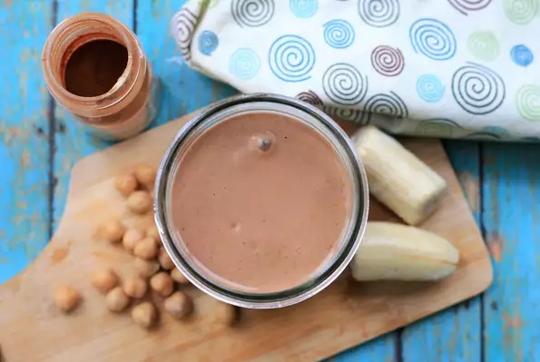

Yummy Strawberry Shake

Description
Hummus shakes are becoming increasingly popular, so I decided to make my own at home.
Unlike traditional savory hummus with ingredients like salt, garlic, and lemon, this vegan and dairy-free shake is naturally sweetened with dates and is high in protein and fiber.
And no one will be able to guess what's in it! Adjust the sweetness by adding more dates, if desired.
Ingredients
- 1 cup unsweetened vanilla-flavored almond milk
- ½ cup canned chickpeas, drained and rinsed
- 4 pitted dates
- 1 medium frozen banana, quartered
- 2 tablespoons tahini
- 1 tablespoon unsweetened cocoa powder
- ¼ teaspoon ground cinnamon
Steps
- Combine almond milk, chickpeas, dates, banana, tahini, cocoa powder, and cinnamon in a blender.
- Blend until smooth, about 30 seconds.
- Serve immediately.